MORTE E CANONIZAÇÃO
ÚLTIMAS NOTÍCIAS
ÚLTIMOS ANOS DE VIDA
Gregório enfrentou uma série de sofrimentos nos últimos tempos da sua existência, principalmente a “gota” que o mantinha no leito. Entretanto, mesmo com suas doenças, permanecia vigilante, com o mesmo zelo, a mesma preocupação, a cuidadosa atenção e o carinho todo especial pela Igreja.
No ano 603, exatamente aquele anterior a sua morte, escreveu em uma das suas cartas: “Já faz muito tempo que não posso me levantar da cama”. “Tenho o corpo seco como num sepulcro, de modo que raras vezes posso me pôr de pé”. “Não sou capaz de lhe contar de quantos outros tormentos estou sendo afligido”. “O viver converteu-se para mim num castigo, desejo ardentemente a morte, porque somente ela poderá trazer o consolo aos meus gemidos”. E da mesma maneira como Jó reclamou, ele também deixou passar a exclamação por causa das dores:“Pesa-me haver chegado a estes dias, e esperar a morte como o único consolo para me ajudar”.
No dia 12 de Março do ano 604, o Papa Gregório I, com 64 anos de idade, entregou a sua alma a DEUS. O que hoje consideramos como sendo pouca idade, naquela época representava uma vida longa, em face dos muitos problemas e das permanentes dificuldades que ele teve de enfrentar. No epitáfio que escreveram no seu túmulo, o denominaram “o Cônsul de DEUS” (Magistrado supremo na república romana).
A sua “CANONIZAÇÃO” aconteceu por aclamação popular, imediatamente após a sua morte. Os Doutores da Igreja que o sucederam fizeram-lhe magníficos elogios. Eles o denominaram: “príncipe dos teólogos”, “luz dos filósofos”, “esplendor dos oradores”, “espelho da santidade”, “orgão do ESPÍRITO SANTO”, “homem de erudição impressionante”
.Foi declarado “Doutor da Igreja pelo Sumo Pontífice Bonifácio VIII, em 20 de Setembro de 1295. São Pio X, o Papa da Eucaristia, o denominou “ornato e gala da Igreja”.
MAGNO
Na secular história da Igreja, vários foram os Papas que se destacaram por suas virtudes, qualidades pessoais, por sua admirável santidade e pela grande importância do seu pontificado. Todavia, somente dois Sumo Pontífices receberam a alcunha de “MAGNO” (O GRANDE), que foram justamente o Papa São Leão I e o Papa São Gregório, que acabamos de sintetizar os fatos mais importantes da sua existência. Sem dúvida, constituí grande destaque a sua firme defesa de Roma contra os invasores e hereges lombardos, a impressionante e imensa caridade em procurar eliminar a fome do povo e dos habitantes de Roma, o seu apoio integral a conversão da Inglaterra e a imensa obra modificando e ajustando a liturgia da Igreja para revigorar a sua utilidade em beneficio dos Sacerdotes e Bispos, e dar mais vida e beleza as orações dos fiéis na Igreja.
MANIFESTAÇÃO DO ESPÍRITO SANTO
O Diácono Pedro, venerado em Roma como Beato, na juventude foi amigo e companheiro de Gregório nos estudos da Sagrada Escritura, e posteriormente foi o seu secretário. E por essa natural razão, teve muita familiaridade com ele. Pedro contou um fato notável: “O Papa Gregório lhe ditava as suas homilias sobre Ezequiel, as quais caprichosamente escrevia. Certo dia em que fazia as anotações, observou que de repente surgiu um véu entre ele e o Papa. O Pontífice ficou num longo silêncio. O véu não permitia a Pedro olhar as reações do Papa. Então fez um buraco no véu e pode observar que uma linda pomba branca estava sentada sobre a cabeça do Papa Gregório, e com o bico entre os lábios do Pontífice. Depois de uns poucos minutos, Gregório continuou a ditar a sua homilia e o Secretário a fazer as anotações. Outra vez, porém, o Papa Gregório ficou em silêncio. A mesma cena se repetiu, ou seja, a pombinha que estava na sua cabeça, voltou a colocar o bico entre os seus lábios. E assim depois de poucos minutos o Papa voltou a ditar a homilia até o final. Por este motivo, o Sumo Pontífice Gregório é representado tendo uma pomba branca à sua cabeça”.
Sem dúvida, a pomba branca era o ESPÍRITO SANTO que veio lhe infundir inspiração, iluminando o seu raciocínio e as suas palavras.
SALVOS PELA INTERCESSÃO DE GREGÓRIO
No mês de Julho de 1855, a pequena cidade de “Soultzmatt-Wintzfelden, na região da Alsácia, na França", com cerca de 2.400 habitantes, foi assolada por uma terrível epidemia de peste bubônica, que atingiu em cheio a população matando mais de 300 pessoas em poucos dias. No auge da epidemia, os habitantes se lembraram que o Sumo Pontífice Gregório Magno, com suas orações unidas as orações das autoridades e do povo, conseguiu a graça de DEUS, fazendo cessar uma abominável epidemia de peste em Roma. E então, da mesma maneira, todo o povo da pequena cidade, unido aos sacerdotes e as autoridades, rezaram e suplicaram a São Gregório Magno que intercedesse junto a DEUS e lhes conseguisse a preciosa graça de acabar com a peste. São Gregório ouviu os pedidos e intercedeu, DEUS limpou a cidade exterminando a peste no mesmo dia de Setembro de 1855. Em agradecimento, colocaram uma “estátua do Papa São Gregório Magno” no tamanho natural, na pequena cidade, em cima de uma coluna de concreto, na esquina da "Rue de la Vallée” e “Rue Doctor Kubler”.
FOTOGRAFIAS
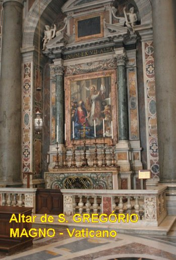
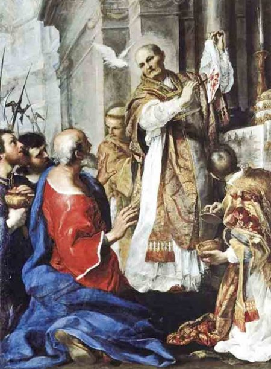
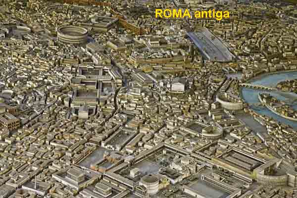
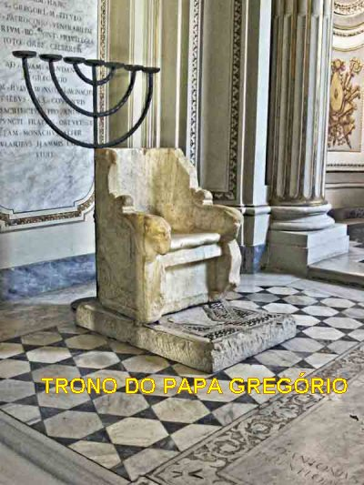
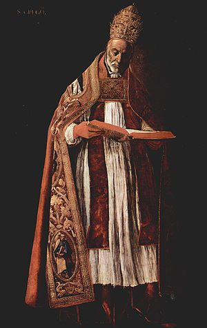
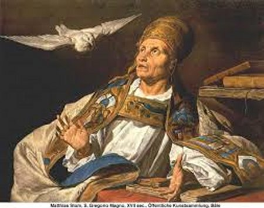
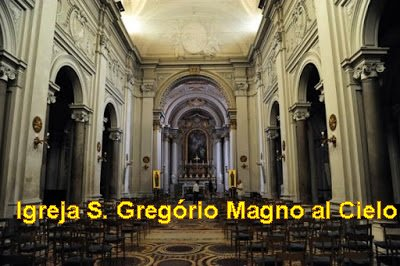
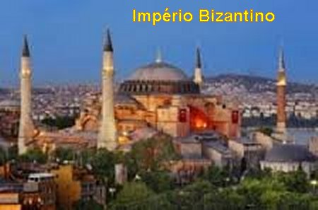
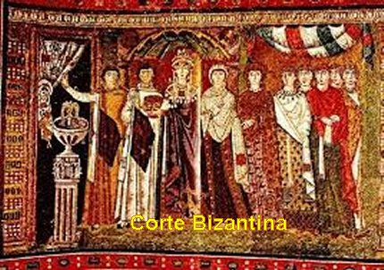
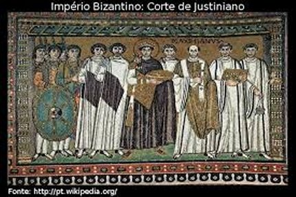
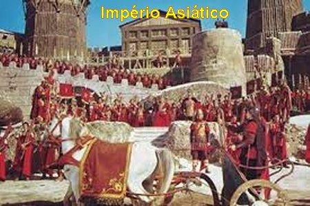
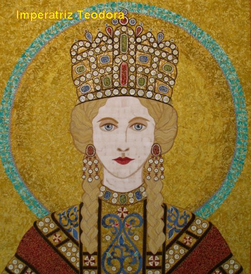
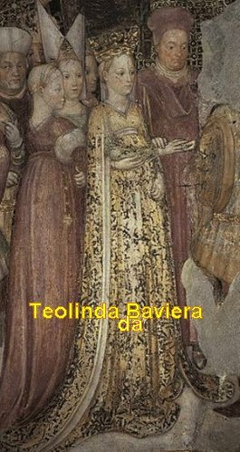
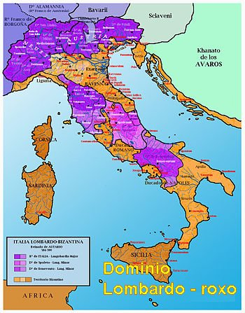
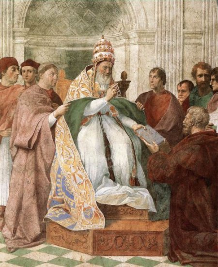
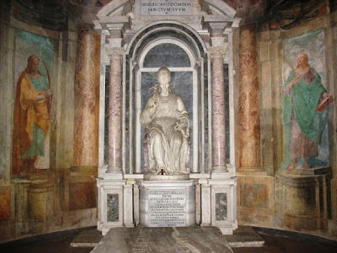
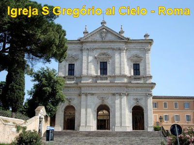
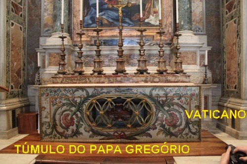
CONVITE
Visite o PORTAL do APOSTOLADO DOS SAGRADOS CORAÇÕES . Nele encontrará todos os Sites que construímos com muito amor e devoção, fundamentados na Sagrada Escritura, na Tradição Cristã, nas Manifestações Sobrenaturais e na Vida e Obra dos Santos. Grande variedade de assuntos: NOSSA SENHORA DA CONCEIÇÃO APARECIDA; A IMACULADA CONCEIÇÃO (Revelação Divina); NOSSA SENHORA DE NAJU (Impressionantes Milagres Eucarísticos); O MISTÉRIO DE DEUS; JESUS DE NAZARÉ (O Rei dos Reis); ADORÁVEL E MISTERIOSO ESPÍRITO SANTO; A VIDA DE NOSSA SENHORA; OS ANJOS DO SENHOR; A VIDA ADMIRÁVEL DE SÃO JOSÉ; SÃO JUDAS TADEU (Causas Impossíveis); NOSSA SENHORA DE FÁTIMA e muitos outros, levando a Verdade Cristã à todos os corações de boa vontade.
http://www.apostoladosagradoscoracoes.com/
"E-MAIL"
Para se comunicar conosco, favor utilizar o E-mail a seguir:
FIRMAS DE BUSCAS